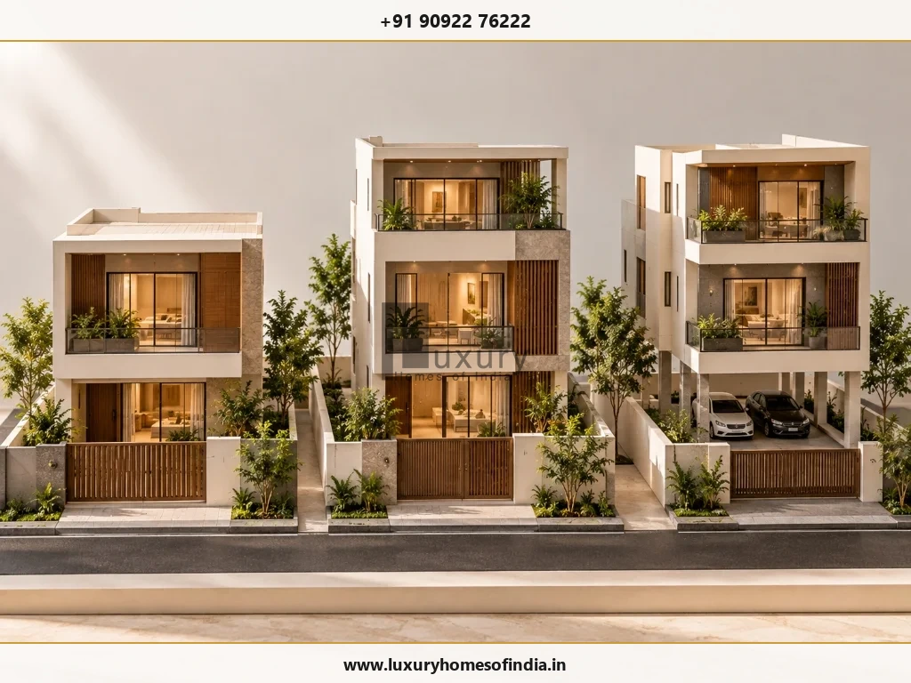
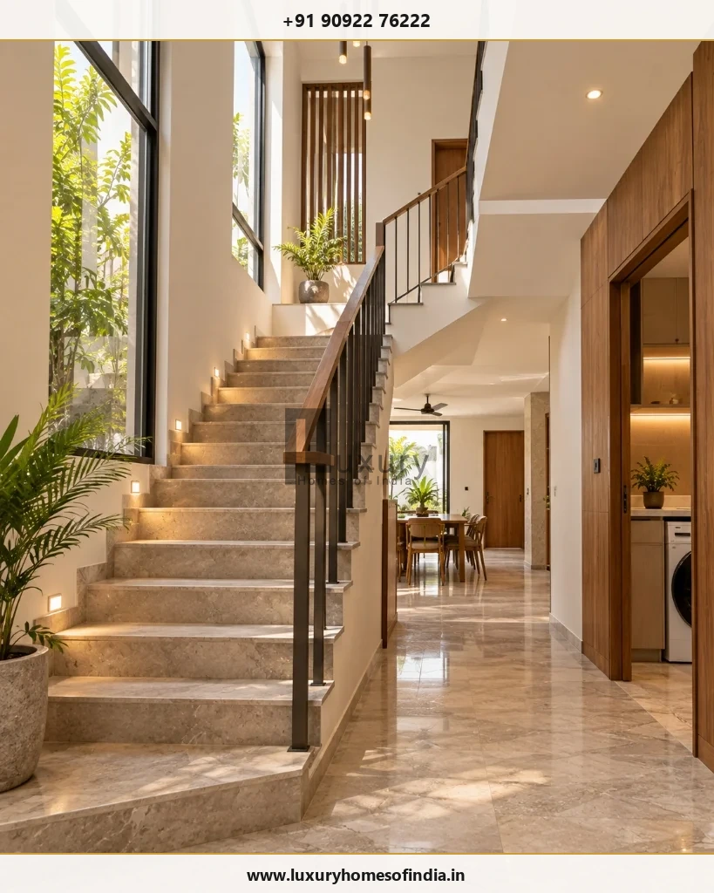

G+2 House on a Small Plot in Chennai: Rules, FSI, Setbacks and Approval (2026 Guide)
Understanding Tamil Nadu building rules, self-certification eligibility, road width requirements, FSI arithmetic, and GCC/CMDA approval steps for multi-storey small-plot homes.
Executive Summary: G+2 Small Plot Feasibility
Can you build a G+2 house on a small plot in Chennai? Plot area alone cannot establish whether a three-level house can be approved. Permissibility depends on plot dimensions, abutting road width, setbacks, floor space index (FSI), building height, land-use status, and the competent authority's approval category. Tamil Nadu's Combined Development and Building Rules, 2019 (TNCDBR) and August 2025 self-certification rules distinguish between G+1, conventional G+2, and Stilt+2 configurations. Before finalizing a design or plot purchase, consult a registered architect or engineer for a site-specific feasibility assessment.
On this page:
Can you build a G+2 house on a small plot in Chennai? It may be possible, but plot area alone cannot establish whether a three-level house can be approved. The answer depends on your plot dimensions, road access and width, applicable setbacks, permissible floor space index (FSI), building height, land-use status and the approval category that applies to your property.
Tamil Nadu's building rules provide different provisions for different residential configurations, so a conventional ground-plus-two-floor house should not automatically be treated as equivalent to a stilt-plus-two-floor house. Before committing to a design or buying a plot, ask a registered architect or engineer to assess the site, verify the applicable rules and prepare a feasibility drawing. This guide explains the key checks, demonstrates how FSI and setbacks interact using a clearly labelled hypothetical example, and outlines the documents and approval steps to discuss with the relevant authority.
G+2 vs G+1 vs Stilt+2: What's the Difference?
The configuration matters because different building arrangements may fall under different regulatory provisions.
Building Configuration Comparison
| Configuration | Meaning | What to Verify Before Design |
|---|---|---|
| G+1 | Ground floor plus one upper floor | Applicable height, FSI, setbacks and approval category |
| G+2 | Ground floor plus two upper floors | Whether the proposed building meets the requirements for its applicable permission route |
| Stilt+2 | Stilt level (commonly used for parking) plus two upper floors | Whether the proposed stilt configuration meets the relevant parking and height provisions |

Tamil Nadu's August 2025 self-certification amendment specifies ground plus one floor or stilt plus two floors, subject to its stated eligibility conditions. A conventional G+2 is not included in that definition. This does not, by itself, establish that a conventional G+2 is prohibited; it means the applicable alternative building-permission route and all relevant requirements must be checked. [1]
Before designing, clarify three things with your architect:
- Do you need three levels of living space, or do you also need parking?
- How many independent dwelling units are proposed?
- Which building category and approval process apply to the site?
Which Building Rules Apply to a Small Residential Plot in Chennai?
Tamil Nadu Combined Development and Building Rules, 2019
The Tamil Nadu Combined Development and Building Rules, 2019 (TNCDBR), together with applicable amendments and other relevant provisions, form the principal regulatory framework to check. Requirements depend on the building category, site and applicable provisions. Do not use a single FSI or setback figure as a universal rule for every small residential plot.
What Does the Self-Certification Scheme Allow?
The August 2025 amendment defines a self-certified residential building using the following limits:
- Plot area up to 2,500 sq ft.
- FSI area up to 3,500 sq ft.
- A maximum of two dwelling units.
- Ground plus one floor, or stilt plus two floors.
- Maximum building height of 10 metres.
All applicable conditions must be satisfied. Meeting the plot-area limit alone does not establish eligibility. The amendment also sets out planning parameters and documentation requirements for this category. [1]
Important: Do not assume that a conventional G+2 qualifies under the same self-certification definition. Have the relevant authority and a registered professional confirm the correct route for your proposed building.
Who Approves the Building Plan?
The competent authority depends on the exact location and applicable jurisdiction:
- Within Greater Chennai Corporation limits: Consult the GCC Town Planning department and its current building-permit procedure.
- Elsewhere in the Chennai Metropolitan Area: Confirm the applicable planning-permission process with CMDA and the relevant local body.
- Outside the metropolitan area: Confirm the appropriate DTCP or local-body process for the property.
GCC publishes its building-permit categories, application procedure and document checklist on its official website. These published details should be checked again before an application is submitted. [2]
What Can You Build on a 600–2,400 sq ft Plot?
A small plot's total area is only the starting point. Its frontage, depth, boundaries, road conditions and applicable open-space requirements influence the footprint available for construction. FSI then limits the floor area that can be counted under the applicable rules.
Plot Area vs. Floor Area Arithmetic (At Assumed FSI 2.0)
| Plot Area (sq ft) | Approx. Cents | Illustrative Floor Area at FSI 2.0 |
|---|---|---|
| 600 sq ft | 1.38 cents | 1,200 sq ft total floor area |
| 800 sq ft | 1.84 cents | 1,600 sq ft total floor area |
| 1,000 sq ft | 2.30 cents | 2,000 sq ft total floor area |
| 1,200 sq ft | 2.75 cents | 2,400 sq ft total floor area |
| 2,400 sq ft | 5.51 cents (1 ground) | 4,800 sq ft total floor area |
Conversions: one cent equals 435.6 sq ft; one ground equals 2,400 sq ft.
These figures show only the multiplication of plot area by an assumed FSI. They do not establish the permitted footprint, the number of floors, the actual usable area or whether approval will be granted. Applicable exemptions and the method of calculating FSI must also be confirmed.
Worked Example: G+2 on a 30 × 40 ft Plot
Consider a hypothetical plot measuring 30 × 40 ft, giving a total area of 1,200 sq ft. The following assumptions demonstrate the interaction between footprint and FSI; they are not verified design parameters for a specific Chennai site.
- Illustrative FSI calculation: At an assumed FSI of 2.0, the calculated floor-area allowance would be 1,200 × 2.0 = 2,400 sq ft, before considering the applicable rules and exclusions.
- Illustrative footprint: Suppose a hypothetical buildable envelope measures 22 × 32 ft after leaving required setbacks. Its footprint area would be 704 sq ft per floor.
- Three-level arithmetic: Three identical footprints would total 704 × 3 = 2,112 sq ft total built-up area.
- Practical layout: The actual internal floor area would be lower after accounting for brick walls, staircase well, circulation, and balcony recesses. Its precise size depends on the architectural plan.
The example demonstrates why an FSI calculation alone is not enough. The proposed building must also fit within the permitted envelope, satisfy height and other requirements, and provide a workable arrangement of rooms, stairs, windows and services.
The next step is a feasibility drawing based on the real plot—not an assumption that the example dimensions will be approved.
Five Factors That Determine G+2 Feasibility
1. Plot dimensions and shape
Two plots with the same area may produce very different layouts. A narrow plot can make staircase placement, windows, ventilation and circulation more challenging than a wider plot. Verify the actual boundaries and dimensions against relevant title and survey records.
2. Abutting road width
The road adjoining the plot is one of the factors to check when determining applicable planning parameters and the approval route. Confirm the recorded road width and the actual site conditions through the appropriate professional and authority process.
3. Setbacks and open spaces
Setbacks are the required spaces between the building and relevant plot boundaries or prescribed lines. They can significantly reduce the footprint available for construction.
Do not assume that a small plot automatically receives reduced or zero setbacks. The applicable provisions must be verified for the proposed building category, height and site.
4. Floor space index (FSI)
FSI is generally expressed as the applicable countable floor area divided by the plot area. The permitted value and the treatment of particular building elements must be established under the rules applicable to the site.
A permitted total floor area does not mean that the same amount can be arranged in any preferred footprint or configuration.
5. Building height and floor configuration
Height must be checked against the relevant provisions and measured in accordance with the applicable rules. Floor-to-floor dimensions, roof and parapet details, stair headroom and other building elements can affect the final design.
Also investigate land-use restrictions, layout approval status, access, survey discrepancies and any applicable restrictions associated with nearby water bodies, transport infrastructure or other regulated areas.
How to Design a Practical G+2 House on a Small Plot

Once the site has been assessed, good planning can help make the available space more useful:
- Plan the staircase early: Its location affects every floor. Design the stair and landings alongside the room arrangement rather than squeezing them into leftover space.
- Prioritise natural light and ventilation: Coordinate window positions, circulation and any required shafts or open-to-sky areas. Their feasibility depends on the actual layout and applicable rules.
- Coordinate kitchens, bathrooms and drainage: Aligning service zones between floors can simplify plumbing and maintenance, subject to the structural and architectural design.
- Decide the number of households early: A home for one family may have different planning implications from a building containing separate dwelling units.
- Design the structure for the intended building: Foundations, columns, beams and slabs must be designed by qualified professionals for the site conditions and proposed loads. A neighbouring house is not proof that the same construction is safe on your plot.
What Affects the Cost of Building a G+2 House?
There is no reliable universal construction rate for every small-plot G+2 house. Costs depend on the design, specifications, site conditions and scope of work.
Important factors include:
- Total constructed area and the treatment of stairs, balconies and other elements.
- Soil conditions and the structural design of the foundation (e.g. isolated footings vs pile foundations).
- Structural system, materials and construction complexity.
- Flooring, joinery, sanitary fittings, electrical and plumbing specifications.
- Waterproofing, external works and water-management requirements.
- Professional fees, applicable approval charges and any parking or stilt works.
For a meaningful comparison, request itemised quotations against the same drawings, specifications and scope of work. Clarify exclusions, provisional items and the treatment of taxes and approvals before comparing contractors.
Documents to Prepare Before a Feasibility Assessment
Start by gathering the records relevant to your property. The final submission requirements must be confirmed with the competent authority.
Potentially relevant documents include:
- Sale deed, lease deed or other applicable title documents.
- Patta and relevant revenue records.
- Field Measurement Book (FMB) or Town Survey sketch, as applicable.
- Approved layout or sub-division records, where relevant.
- Accurate plot dimensions and boundary information.
- Road access and road-width information.
- Existing building plans and approvals, if there is an existing structure.
- Details of the proposed configuration and number of dwelling units.
GCC's published checklist also identifies an encumbrance certificate and certain additional records or no-objection certificates where applicable. The checklist for your site may differ according to its location and circumstances. [2]
How to Get a G+2 Building Plan Approved
Use the following sequence as a planning checklist:
- Verify the property records: Resolve discrepancies in ownership, survey details, boundaries or access before committing to detailed design.
- Identify the competent authority: Establish which authority handles planning permission and the building permit for the specific site (GCC, CMDA, or DTCP).
- Engage a registered architect or engineer: Ask for a site visit and an assessment against the applicable rules.
- Prepare a feasibility plan: Review the proposed floors, area statement, setbacks, height, access, staircase, parking and ventilation.
- Confirm the approval route: Check whether the proposal satisfies the conditions of any applicable self-certification process or requires another permission route.
- Submit the application: Follow the current official process and provide the required drawings and documents.
- Respond to requests for clarification: Resolve objections and supply additional information through the prescribed process.
- Obtain the required approval before construction: Build in accordance with the sanctioned plans and applicable conditions.
The GCC Town Planning department publishes its application procedure and supporting-document checklist. Use the official information relevant to your jurisdiction rather than relying solely on a third-party checklist. [2]
Common Mistakes to Avoid
- Assuming that plot area alone guarantees approval.
- Treating G+2 and Stilt+2 as interchangeable configurations.
- Applying a generic FSI or setback number to a site without checking the rules.
- Designing the rooms before establishing the buildable envelope and staircase position.
- Confusing calculated floor area with usable internal area.
- Copying a neighbour's approved plan without checking the differences between the sites.
- Adding floors to an existing structure without a proper structural assessment.
- Beginning construction before obtaining the required permissions.
Need a Feasibility Assessment for Your Small Plot in Chennai?
Consult with Luxury Homes of India’s residential architects and engineers to assess your plot dimensions, setback constraints, FSI limits, and building approval requirements.
Frequently Asked Questions
Final Checklist: Is Your Small Plot Suitable for G+2?
Before finalising the design or purchase, confirm that you have:
- Verified plot dimensions and boundaries.
- Checked ownership, survey and relevant layout records.
- Established the competent authority and applicable approval route.
- Confirmed the relevant FSI, setbacks and height requirements.
- Tested the proposed footprint, staircase, parking and ventilation.
- Obtained the required architectural and structural assessment.
The key takeaway: A small plot's suitability for a G+2 house is determined by the complete set of applicable planning and building requirements—not by a single plot-area or FSI calculation.
For a site-specific decision, consult a registered architect or engineer and confirm current requirements with the competent authority. If Luxury Homes of India offers a relevant feasibility service, this is an appropriate point to enquire about an assessment.
Disclaimer: This article provides general educational information and is not legal, architectural or structural advice for a specific property. Building regulations and administrative procedures may change. Verify current requirements with the relevant authority and qualified professionals before relying on them.
Sources & Official References
- Tamil Nadu Government Gazette, G.O. Ms. No. 118, Housing and Urban Development Department, 8 August 2025, published 11 August 2025: amendments to the Tamil Nadu Combined Development and Building Rules, 2019. View the reproduced Gazette text.
- Greater Chennai Corporation, Town Planning Department: published building-permit procedure and document checklist.
- Tamil Nadu Urban Administration, Combined Development and Building Rules, 2019.